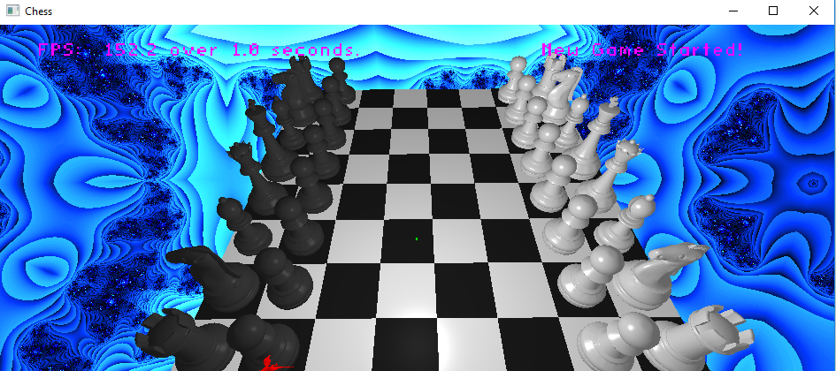
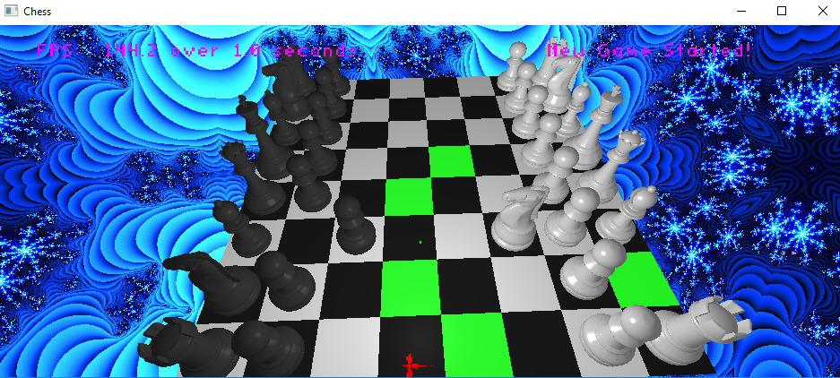
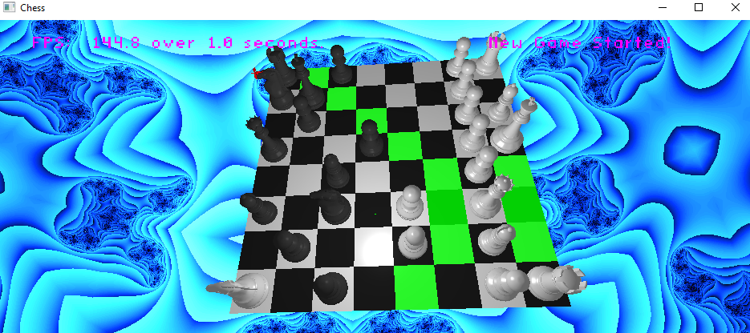
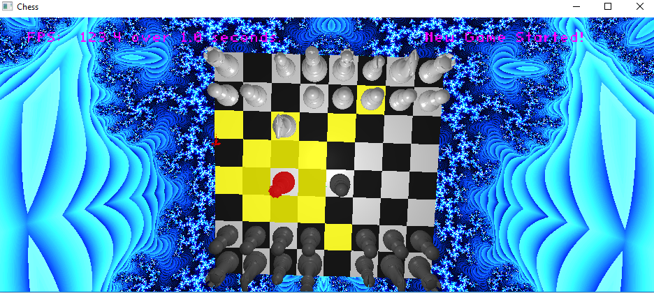
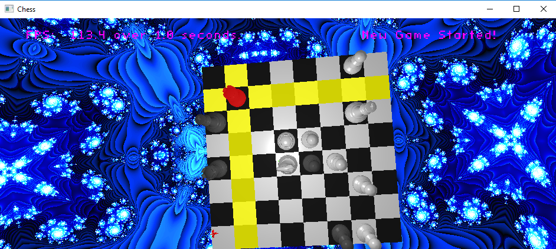
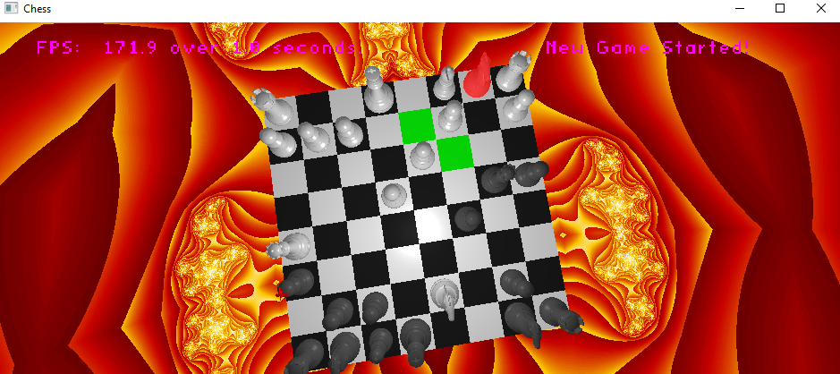
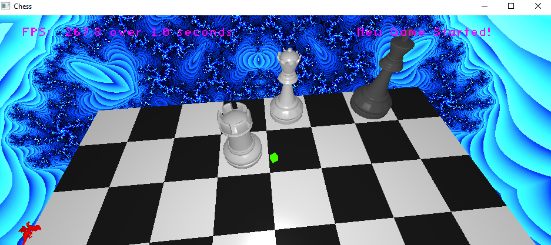

Chess

Game Start
An image of the 3D Chess board at startup.

Knight Moves
An image of the options for the selected piece (a knight of the player whose turn it is)

Queen Moves
An image of the options for the players queen based on current board state

Enemy Queen Moves
A visual indicator of the move options the player sees if they select a piece not theirs (notice color difference)

Enemy Rook Moves
A visual indicator for the move options for an enemy rook

Check
Check - complete with background color change. Move suggestions take check into account, and will not present options that do not get the player out of check

Check Mate
Check Mate - Piece selection is disabled so the board remains locked in game-end state.
Project Tech/Algorithms
GLSL (OpenGL Shading Language
Extended Project Details
For a 5 week course at Neumont, we were told to program a chess application using any technologies we chose. I decided to write it in C++, using my game engine.
The application can be played Player vs. Player, Player vs. AI, or even AI vs. AI. I wrote a two simple chess AIs, one that makes a random move every turn, which was extremely useful for debugging, and another, which simply acts on piece values, and makes whatever move it considers most valuable based on the current board state.
Mouse picking allows selection of pieces, and movement to valid squares. It is not playable in-browser, so I have taken screenshots of the application being used instead.
Project Credits